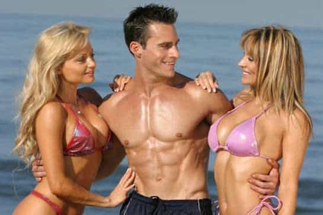

< < < Back
3 Critical Rules To Build A Physique That Turns On Women – Return Of Kings
It’s no secret that learning game is harder than it ever was before—with Soros “1 in 4 women are raped” propaganda on every corner, anti-male sentiment emanating from the hordes of social justice warriors, and women’s general lack of femininity, attracting and seducing hot girls without encountering numerous obstacles is a seemingly impossible challenge.
Shit tests, friends cock blocking you, and poor logistics… it seems that we must do everything within our power to level the playing field. You can try building your wealth, you can try learning game, and you can try working on your personality, but in my experience, one thing works best: game combined with a killer physique.
Having a killer physique is the most immediate thing that a girl sees about you. Not your bank account, not your game, not your personality but your physical body. Yes, obviously everything else is important, but developing a shredded, lean physique that turns heads is an incredibly powerful asset.
Learning Game With A Killer Physique

I don’t want to exaggerate here, but it’s hard not to. When I first started working out around the age of 13, I didn’t think it would have much of an effect. Yeah, maybe I’d get a few IOI’s here and there, but I figured it was something you just did for health.
Oh my god, was I wrong—fast forward 10 years, and I can’t believe the power that it commands, not only in terms of respect from your peers, but in attraction from women. Despite the SJW’s harping on men for being shallow, it turns out that women are actually just as shallow… they just hide it better.
I recall the first time that I really started to understand how powerful an aesthetic physique really was. I was 18, and had just graduated high school—I’d been lifting pretty seriously for about a year, but at the time still really had no idea what I was doing.
I decided to go to the pool with some buddies. I’d been hitting the gym extra hard over the past year, because I wanted to look like a total stud when I went to college, but it turns out I didn’t even have to wait that long. We got to the pool, and immediately 3 hot girls caught my eye. They were absolutely gorgeous, and I could barely contain my testosterone.
I subtly pointed them out, so my buddies could see, and we all sat down next to them. Immediately, one of them who was lying on her stomach, tanning, turned towards me and asked: “What’s your name?”
Holy hell—did she just open ME? From there the whole conversation was smooth sailing. She immediately gave me a ton of IOI’s, playing with her hair, biting her lip; pretty much acting like a complete school girl around me.
The conversation ended with her asking for my number, and she texted me the next day wanting to hang out.
Ever since then I’ve never underestimated the power of an aesthetic physique. A chiseled, sexy V-Taper signals confidence, vitality, strength, and most importantly, alpha male status. In all seriousness, when you’re jacked, gaming women is like shooting fish in a barrel.
1. Utilize P.H.A.T. Training

Imagine learning game when you look like this
When most guys start working out, they fall for the classic “bro split” vs. powerlifting routine dichotomy. A “bro-split,” as it’s aptly named, is the routine that most douchebag mustang drivers, college chads, and curl bros follow. It essentially divides your workout routine up into 3 separate days: chest and arms, shoulders and back, and legs.
There’s different variations, but the idea is that you cycle the days—for example, you may do something like this:
- Monday: Chest and Arms
- Tuesday: Legs
- Wednesday: Back and Shoulders
- Thursday: Rest
Then, you’d just repeat this over and over until the end of eternity. The benefits of this are that you’ll train mass, and will certainly get a proportional physique. The negative side, however, is that it’s extremely difficult to build strength since most of the bro-splits consist of higher repetition exercises.
In stark contrast, is the typical powerlifting routine, which is usually either Starting Strength or some 5×5 variation. These consist of Days “A,” and “B,” each of which usually contains 3-4 exercises.
So, a typical powerlifting routine, may look something like this:
- Day A: Squats, Bench, Barbell Row
- Day B: Squats, Overhead Press, Deadlift
Then, you would just alternate with a rest day in between. So, in other words, you might do Day A on Monday, Day B on Wednesday, and Day A on Friday. Then, the next week, you’d pick up where you left off: do Day B on Monday, Day A on Wednesday, and so on and so forth.
The main benefit of a powerlifting routine is that you’ll gain a ton of strength, and it’ll be functional, too. The major downside, however, is that you’ll often end up looking like a T-Rex: huge legs and giant pecs, but scrawny arms from a lack of direct exercises.
Most guys are stuck choosing between either massive strength and little aesthetics, or massive aesthetics and paltry strength, but I propose, there’s a way you can get both.
After nearly 7 years of lifting, oscillating between various bro-splits and powerlifting routines, I discovered a principle called “Power Hypertrophy Adaptive Training,” or P.H.A.T. for short. The idea behind PHAT is that you combine both strength and mass training…into one routine.
I won’t go too in depth here, since I cover this all in my latest book, but here is a sample template that you can use to design your own routine:
- Day 1: Upper Body Strength
- Day 2: Lower Body Strength
- Day 3: Rest
- Day 4: Back and Shoulders Hypertrophy
- Day 5: Cardio, HIIT, or Legs Hypertrophy
- Day 6: Chest and Arms Hypertrophy
- Day 7: Rest
The strength days will build rock solid, dense muscle—your bench, squat, deadlift, and other compound lifts will sky-rocket. The mass days will build huge, aesthetic biceps, triceps, and shoulders—in other words, it works the auxiliary muscles and makes them gigantic, in a way that strength training can’t do.
Simply switching to a PHAT based workout routine will astound you—you’ll get stronger and stronger every week, as the mass and strength training both work together synergistically. I do not exaggerate when I say that following a PHAT routine will make your progress in the gym triple.
2. Choose The Proper Diet For YOU

How you’ll feel knowing every girl in a 2 mile radius wants you
Intermittent Fasting, the Paleo Diet, the Bulletproof Diet, the Atkins Diet, the South Beach diet, Slow-Carb, High-Carb…when you first get into the world of fitness, and even after several years, it can be incredibly confusing. It seems that every single “expert,” out there has an opinion. I’m here to tell you that a good 75% of it is total bullshit.
Here’s what you need to realize: there is no one size fits all. Different diets suit different needs and different goals, so I’m going to simplify it for you. First, ask yourself, what is your body type:
- Hard-Gainer (very skinny, have a difficult time putting on weight)
- Obese (30+ pounds overweight)
- Average (Between 15-20% body fat)
Okay, now, let’s simplify. If you’re a hard-gainer, and you’re trying to gain a lot of muscle mass, here’s what you need to do. First things first, don’t do any of that intermittent fasting, paleo, or Atkins garbage—it’s meant for losing weight. You’re going on the “high-carb” diet. Eat a medium to large sized meal every 3-4 hours, ideally having some carbohydrates, fats, and proteins.
If you’re obese, I recommend you use the paleo diet. Low-carb diets put your body into a mild state of ketosis—AKA your body burns fat for energy, and not carbohydrates.
Don’t worry so much about how much you eat, just eat foods that only cavemen would have access to. Nothing processed, nothing artificial, no grains or wheat, just the Neanderthal foods: farm fresh meat, organic vegetables, and nuts. Keep fruit and berries to an absolute minimum (maybe one serving post-workout).
Do this until you’re around 12% and if you like, you can then switch over to a more carbohydrate based diet to build muscle (carbohydrates make building muscle so much easier). Consume the majority of your daily carbohydrates before and after your workout, however, to maximize muscle-gain and minimize fat loss.
If you’re average, consider following the “recomposition,” protocol. Work out every day on an empty stomach, ideally early in the morning. Consume 5 grams of BCAA’s to prevent muscle wasting, and then eat a carbohydrate heavy meal post-workout. Calculate your calories, eat roughly 200 less than maintenance, and you’ll melt fat and build muscle at the same time.
Do you see why most diets are total bullshit now? They act as if there’s a one-size fits all approach, but there’s not. The reality is that you’ll have to approach your diet like you approach your health: it depends on the individual.
3. Aim for the “Golden Ratio”

Girls will regularly ask to feel your abs when you go out clubbing
Statistically, do you know what women find most attractive physically? No, it isn’t height—it’s something called the “golden ratio,” or a man’s shoulder to waist ratio.
Studies have shown that when a man’s shoulder to waist ratio is roughly 1.618, women consistently rank him as being the most attractive among his peer group. Yup, that’s right. You can out train your poor height genetics, your poor face genetics, and whatever minority skin color you think hurts your chances.
The question, then, is how? How do you train to get that V-Taper that women absolutely adore? Well, I propose two things:
- Utilize weighted and un-weighted back exercises
- Do sets to failure
That’s it. Most guys don’t combine un-weighted back exercises like pull ups, with weighted back exercises like Pendlay rows or lat pull downs—they typically do one or the other, and their piss poor results show it. I propose that you do BOTH.
My workout routine (for Back and Shoulders day) consists first of the typical weighted back exercises, but then, I do 3 sets of pull ups to absolute failure. I’ll do as many pull ups as I can, and then go over to the pull up machine, and do as many as I can with 20 pounds of assistance. Then 40 pounds, then 60 pounds, all the way until I can’t do anymore.
Then, I do this two more times. If you think you’ve ever experienced a burn from back day, but haven’t done this, you’re in for a surprise. Your back will be BURNING in agony after just 1 set, but hey, if you want an aesthetic physique, in the words of Arnold: “No pain, no gain.”
In other words, the more pain you feel on a hypertrophy day, the more you’ll gain—so aim to combine weighted and un-weighted back exercises, to get the best of both worlds. The weighted exercises will train for strength and build dense muscle, and the unweighted will build mass and endurance muscle.
Want More?
If you’re interested in building a strong, healthy, Greek-god-like physique, then consider checking out my eBook. For a limited time only, I’m giving Return of Kings readers 25% off, plus two FREE eBook bonuses. In addition to this, you’ll also get “Priority Coaching,” where I respond to your emails within 48 hours, so that you have absolutely no questions about how to get jacked as hell.
In Body of an Alpha, I cover damn near everything you need to know about getting shredded, melting away fat, and packing on slabs of muscle. Here’s some of the benefits that you’ll get when you decide to purchase my guide to building the body that women desire:
- The “Principles of Lifting,” which most guys violate, destroying any chance at muscle gain
- Recovery hacks, to minimize cortisol, and boost growth hormone, so that you can double your recovery speed
- A guide to myofascial release and stretching to prevent injury, ensuring you never have to skip a day at the gym
- The official “Body of an Alpha,” routine, meant to transform your body into a statue of Zeus
- BONUS #1 – “Alpha Supplements,” my guide to legal steroids, the best pre-workouts, and more
- BONUS #2 – A reader requested FAQ, including how to shop for a fit body, how to blunt hunger, and more
- BONUS #3 – My “Exercise Demonstration Guide,” so that there’s not a single doubt in your mind about how to do the Body of an Alpha routine
- BONUS #4 – Priority Coaching! Just email me and ask me whatever questions you have, I’ll get back to you within 48 hours.
- And more! Body of an Alpha is 150+ pages of all-killer no-filler material, PACKED with knowledge from nearly 10 years of experience and nearly $10,000 spent trying different routines, supplements, and techniques
So if you want to take it to the next level, and get that aesthetic, ripped physique that’ll get you laid in record time, click here and take advantage of my 25% discount and bonuses while they still last!
Read Next: 10 Reasons You Can’t Build Muscle